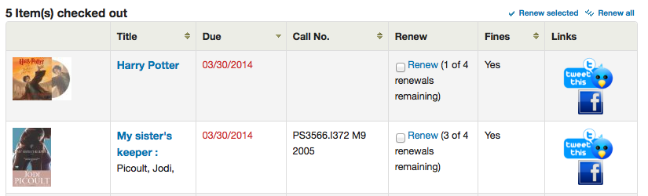
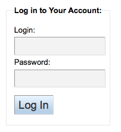

OPAC
Get there: More > Administration > Global system preferences > OPAC
Advanced search options
OpacAdvSearchMoreOptions
Default: Select all
Asks: Show search options for the expanded view ___
Values:
[Select all]
Item types
Language
Location and availability
Publication date
Sorting
Subtypes
Description:
The settings in this preference will determine which search fields will show when the patron is using the ‘More options’ mode on the advanced search page.
OpacAdvSearchOptions
Default: Item types, Language, Location and availability, Publication date, Sorting
Asks: Show search options ___
Values:
[Select all]
Item types
Language
Location and availability
Publication date
Sorting
Subtypes
Description:
The settings in this preference will determine which search fields will show when the patron is using the ‘Fewer options’ mode on the advanced search page.
Appearance
These preferences control how things appear in the OPAC.
BiblioDefaultView
Default: in simple form
Asks: By default, show bib records ___
Values:
as specified in the ISBD template.
See ISBD preference for more information
in simple form.
in their MARC format.
Description:
This preference determines the level of bibliographic detail that the patron will see on the OPAC detail page. The simple form displays the graphical interface; MARC format displays the MARC21 cataloging view; ISBD displays the ISBD (International Standard Bibliographic Description, AACR2) view.
COinSinOPACResults
Default: Include
Asks: ___ COinS / OpenURL / Z39.88 in OPAC search results.
Values:
Don’t include
If you choose not to include COinS on the search results, it will still be loaded on the individual bibliographic records.
Include
Enabling this feature will slow OPAC search response times.
Description:
COinS stands for ContextObjects in Spans. COinS is a method to embed bibliographic metadata in the HTML code of web pages. This allows bibliographic software to publish machine-readable bibliographic items and client reference management software (such as Zotero) to retrieve bibliographic metadata. The metadata can also be sent to an OpenURL resolver. This allows, for instance, searching for a copy of a book in one’s own library.
DisplayOPACiconsXSLT
Asks: ___ the format, audience, and material type icons and descriptions in XSLT MARC 21 results and detail pages in the OPAC.
Default: Don’t show
Values:
Don’t show
Show
Description:
This system preference is used to show or hide the format, audience and material type information pulled from the control fields of the MARC 21 bibliographic record.

Note
See the XSLT material type icons for more information on these icons.
Important
This is only used in XSLT displays, so OPACXSLTResultsDisplay and/or OPACXSLTDetailsDisplay must be set to use an XSLT stylesheet for this to show (default or custom)
hidelostitems
Default: Don’t show
Asks: ___ lost items on search and detail pages.
Description:
Items that are marked lost by the library can either be shown or not shown on the OPAC. By setting the value to “Don’t show,” the lost item is not shown on the OPAC. By setting the value “Show,” the lost item is shown on the OPAC for patrons to view with a status of ‘lost.^
Values:
Don’t show
Show
HighlightOwnItemsOnOPAC and HighlightOwnItemsOnOPACWhich
HighlightOwnItemsOnOPAC Default: Don’t emphasize
HighlightOwnItemsOnOPACWhich Default: patron’s home library
Asks: ___ results from the ___ by moving the results to the front and increasing the size or highlighting the rows for those results.
HighlightOwnItemsOnOPAC Values:
Don’t emphasize
Emphasize
HighlightOwnItemsOnOPACWhich Values:
OPAC’s branch based via the URL
The library is chosen based on the Apache environment variable BRANCHCODE. For example, this could be added to the OPAC section of koha-httpd.conf: SetEnv BRANCHCODE “CPL”
patron’s home library
The items emphasized will be those of the same library as the patron’s library. If no one is logged into the OPAC, no items will be highlighted.
Important
This preference will only effect sites that are not using an XSLT stylesheet. XSLT stylesheets are defined in the OPACXSLTResultsDisplay and OPACXSLTDetailsDisplay preferences.
LibraryName
Asks: Show ___ as the name of the library on the OPAC.
Note
This value will appear in the title bar of the browser
Note
Add a news item with the opacheader display location with the news tool if you’d like to add a library name above your search box on the OPAC

OpacAdditionalStylesheet
Asks: Include the additional CSS stylesheet ___ to override specified settings from the default stylesheet.
Description:
The preference can look for stylesheets in the template directory for your OPAC language, for instance: /koha-tmpl/opac-tmpl/prog/en/css. If you upload a custom file, opac-mystyles.css to this directory, you can specify it by entering opac-mystyles.css in your opaccolorstylesheet system preference. This adds your custom stylesheet as a linked stylesheet alongside the OPAC’s default CSS files. This method is preferable because linked stylesheets are cached by the user’s browser, meaning upon repeat visits to your site the user’s browser will not have to re-download the stylesheet, instead using the copy in the browser’s cache.
If you would rather, you can upload your CSS to another server and enter the full URL pointing to it’s location remember to begin the URL with http://
Note
Leave this field blank to disable it
Note
This file will add a linked CSS, not replace the existing default CSS.
OpacAddMastheadLibraryPulldown
Default: Don’t add
Asks: ___ a library select pulldown menu on the OPAC masthead.
Values:
Add

Don’t Add

OPACBaseURL
Asks: The OPAC is located at ___
Description:
This preference is looking for the URL of your public catalog (OPAC) with the http:// in front of it (enter http://www.mycatalog.com instead of www.mycatalog.com). Once it is filled in Koha will use it to generate permanent links in your RSS feeds, for your social network share buttons and in your staff client when generating links to bib records in the OPAC.
Important
Do not include a trailing slash in the URL this will break links created using this URL. (example: http://www.google.com not http://www.google.com/)
Important
This must be filled in with the URL of your public catalog for RSS, unAPI, and search plugins to work.
Important
This must be filled in with the URL of your public catalog to show ‘OPAC View’ links from bib records in the staff client:
OPACDisplay856uAsImage
Default: Neither details or results page
Asks: Display the URI in the 856u field as an image on: ___
Values:
Both results and details pages
Important
Both OPACXSLTDetailsDisplay and OPACXSLTResultsDisplay need to have values in order for this preference to work.
Important
This is only implemented for MARC21 and NORMARC.
Detail page only
Important
OPACXSLTDetailsDisplay needs to have a value in it for this preference to work.
Important
This is only implemented for MARC21 and NORMARC.

Neither details or results page
Results page only
Important
OPACXSLTResultsDisplay needs to have a value in it for this preference to work.
Important
This is only implemented for MARC21 and NORMARC.
Description:
In addition to this option being set, the corresponding XSLT option must be turned on. Also, the corresponding 856q field must have a valid MIME image extension (e.g., “jpg”) or MIME image type (i.e. starting with “image/”), or the generic indicator “img” entered in the field. When all of the requirements are met, an image file will be displayed instead of the standard link text. Clicking on the image will open it in the same way as clicking on the link text. When you click on the image it should open to full size, in the current window or in a new window depending on the value in the system pref OPACURLOpenInNewWindow.

OpacExportOptions
Default:

Asks: Select export options that should be available from OPAC detail page: ___
Description:
In the OPAC on the right of each bib record there is a menu that allows for saving the record in various formats. This patch will allow you to define which options are in the pull down menu. Available options are: BIBTEX (bibtex), Dublin Core (dc), MARCXML (marcxml), MARC-8 encoded MARC (marc8), Unicode/UTF-8 encoded MARC (utf8), Unicode/UTF-8 encoded MARC without local use -9xx, x9x, xx9- fields and subfields (marcstd), MODS (mods), and RIS (ris).
OPACFallback
Default: bootstrap
Asks: Use the ___ theme as the fallback theme on the OPAC.
Description:
The purpose of this preference is to provide a way to choose to what theme to fallback on when you have a partial theme in place.
OpacFavicon
Asks: Use the image at ___ for the OPAC’s favicon.
Description:
The favicon is the little icon that appears next to the page title in the tab in most browsers. The default value for this field (if left blank) is the small ‘K’ of the Koha logo on a white background.
Enter a complete URL (starting with http:// or https://) to your image
注解
Turn your logo into a favicon with the Favicon Generator.
OpacHighlightedWords and NotHighlightedWords
OpacHighlightedWords Default: Don’t highlight
NotHighlightedWords Default: and|or|not
Asks: ___ words the patron searched for in their search results and detail pages; To prevent certain words from ever being highlighted, enter a list of stopwords here ___ (separate columns with |)
OpacHighlightedWords Values:
Don’t highlight
Highlight
OPACHoldingsDefaultSortField
Default: First column of the table
Asks: ___ is the default sort field for the holdings table
Values:
First column of the table
Holding library
Home library
OpacKohaUrl
Default: Don’t show
Values:
Don’t show
Show
Description:
When this preference is set to ‘Show’ text will appear in the bottom right of the OPAC footer stating ‘Powered by Koha’ and linking to the official Koha website.

OpacLangSelectorMode
Default: only footer
Asks: Display language selector on ___.
Values:
both top and footer
only footer
top
Description:
If you have the opaclanguagesdisplay preference set to display language options in the public catlaog, then this preference will allow you to control where the language selector shows. You can choose to show it only on the top or bottom or in both places.
opaclayoutstylesheet
Default: opac.css
Asks: Use the CSS stylesheet /css/ ___ on all pages in the OPAC, instead of the default
Description:
This setting’s function is to point to the *.css file used to define the OPAC layout. A *.css file is a cascading stylesheet which is used in conjunction with HTML to set how the HTML page is formatted and will look on the OPAC. There are two stylesheets that come with the system; opac.css and opac2.css. A custom stylesheet may also be used. The stylesheets listed in the opaclayoutstylesheet preference are held on the Koha server.
Note
Leave this field blank to disable it and let Koha use the default file instead
Important
Using a custom value in this preference causes Koha to completely ignore the default layout stylesheet.
OpacLocationBranchToDisplay
Default: holding library
Asks: Display the ___ for items on the OPAC record details page.
Values:
holding library
home and holding library
home library
Description:
Defines whether to display the holding library, the home library, or both for the opac details page.
OpacLocationOnDetail
Default: below the holding library
Asks: Display the shelving location ___ for items on the OPAC record details page.
Values:
below both home and holding libraries
on a separate column
below the holding library
below the home library
Description:
Defines where the shelving location should be displayed, under the home library, the holding library, or both, or in a separate column.
OpacMaintenance
Default: Don’t show
Asks: ___ a warning that the OPAC is under maintenance, instead of the OPAC itself.
Note
this shows the same warning as when the database needs to be upgraded, but unconditionally.
Description:
This preference allows the system administrator to turn off the OPAC during maintenance and display a message to users. When this preference is switched to “Show” the OPAC is not usable. The text of this message is not editable at this time.
Values:
Don’t show
Show
When this preference is set to show the maintenance message the ability to search the OPAC is disabled and a message appears. The default message can be altered by using the OpacMaintenanceNotice preference.

OpacMaintenanceNotice
Asks: Show the following HTML when OpacMaintenance is enabled
Descritpion:
This preference will allow you to set the text the OPAC displays when the OpacMaintenance preference is set to ‘Show.^
OpacMaxItemsToDisplay
Default: 50
Asks: Display up to ___ items on the biblio detail page
Description:
This preference will help with slow load times on the bibliographic detail pages by limiting the number of items to display by default. If the biblio has more items than this, a link is displayed instead that allows the user to choose to display all items.
OpacMetaDescription
Asks: This description will show in search engine results (160 characters).
Description:
This preference adds functionality to add a meta description tag with content (up to 160 characters). This is used by search engines to add a description to the library in search results.
OpacMoreSearches
Asks: Add additional elements to the “More Searches” bar on the OPAC, with the following HTML (leave blank to disable)
Description:
This preference allows you to add more links/searches under the search box at the top of the OPAC. By default (and depending on system preferences) there is a link for Advanced Search, Course reserves, Authority search, and Tag cloud. Any new searches will be added to the left of the already present links.
An example of the HTML that ould be added to this system preference:
<a href=”Koha-community.org”>Koha Community</a>
On the OPAC, this will display the text Koha Community and link to the Koha Community website.
OPACMySummaryHTML
Asks: Include a “Links” column on the “your summary” tab when a user is logged in to the OPAC, with the following HTML (leave blank to disable).
Description:
In this preference you can enter HTML that will appear on the ‘Checked Out’ tab on the ‘your summary’ section when logged in to the OPAC. The placeholders {BIBLIONUMBER}, {TITLE}, {ISBN} and {AUTHOR} will be replaced with information from the displayed record. This can be used to enter in ‘share’ links for social networks or generate searches against other library catalogs.

Sample Data:
<p><a href="http://www.facebook.com/sharer.php?u=http://YOUROPAC.ORG/cgi-bin/koha/opac-detail.pl?biblionumber={BIBLIONUMBER}">Share on Facebook</a>
<br />TITLE: {TITLE}
<br />AUTHOR: {AUTHOR}
<br />ISBN: {ISBN}
<br />BIBLIONUMBER: {BIBLIONUMBER}</p>
OPACMySummaryNote
Asks: Note to display on the patron summary page.
Description:
This preference will display text above the patron’s summary and below the welcome message when the patron logs in to the OPAC and view their ‘your summary’ tab.

OpacNav
Default: Important links here.
Asks: Show the following HTML on the left hand column of the main page and patron account on the OPAC (generally navigation links)

Learn more in the OPAC editable regions section.
OpacNavBottom
Asks: Show the following HTML on the left hand column of the main page and patron account on the OPAC, after OpacNav, and before patron account links if available:
Description:
When a patron is logged in to their account they see a series of tabs to access their account information. OpacNav appears above this list of tabs and OpacNavBottom will appear below them. When not on the patron account pages the HTML in OpacNavBottom will just appear right below OpacNav.

OpacNoItemTypeImages
Asks: Show itemtype icons in the OPAC: ___
Default: Yes
Values:
Yes
No
Description:
This preference allows the system administrator to determine if users will be able to set and see an item type icon in the catalog in the staff interface.
If images of item types are disabled, text labels for item types will still appear in the staff interface.
The noItemTypeImages system preference is used to show or hide the itemtype images in the staff interface.
OPACNoResultsFound
No Default
Asks: Display this HTML when no results are found for a search in the OPAC
This HTML will display below the existing notice that no results were found for your search.

Note
You can insert placeholders {QUERY_KW} that will be replaced with the keywords of the query.
OPACPlayMusicalInscripts
Default: Don’t play
Asks: ___ MIDI representation of musical inscripts on the OPAC record details page.
Values:
Don’t play
Play
Description:
This preference controls whether a short audio clip is available to play when musical incipits are added to the detailed view of a bibliographic record.
Note
The OPACShowMusicalInscripts preference must be set to ‘Show’ for these clips to display.
OpacPublic
Default: Enable
Asks: ___ Koha OPAC as public. Private OPAC requires authentication before accessing the OPAC.
Values:
Don’t enable
Enable
Description:
This preference determines if your OPAC is accessible and searchable by anyone or only by members of the library. If set to ‘Don’t enable’ only members who are logged into the OPAC can search. Most libraries will leave this setting at its default of ‘Enable’ to allow their OPAC to be searched by anyone and only require login for access to personalized content.
OPACResultsLibrary
Default: home library
Asks: For search results in the OPAC, show the item’s ___. Please note that this feature is currently available for MARC21 and UNIMARC.
Values:
current location
home library
OPACSearchForTitleIn
Default: <li><a href=”http://worldcat.org/search?q={TITLE}” target=”_blank”>Other Libraries (WorldCat)</a></li> <li><a href=”http://www.scholar.google.com/scholar?q={TITLE}” target=”_blank”>Other Databases (Google Scholar)</a></li> <li><a href=”http://www.bookfinder.com/search/?author={AUTHOR}&title={TITLE}&st=xl&ac=qr” target=”_blank”>Online Stores (Bookfinder.com)</a></li>
Asks: Include a “More Searches” box on the detail pages of items on the OPAC, with the following HTML (leave blank to disable)
Note
The placeholders {BIBLIONUMBER}, {CONTROLNUMBER}, {TITLE}, {ISBN}, {ISSN} and {AUTHOR} will be replaced with information from the displayed record.
OpacSeparateHoldings and OpacSeparateHoldingsBranch
OpacSeparateHoldings default: Don’t separate
OpacSeparateHoldingsBranch default: home library
Asks: ___ items display into two tabs, where the first tab contains items whose ___ is the logged in user’s library. The second tab will contain all other items.
OpacSeparateHoldings values:
Don’t separate
Separate
OpacSeparateHoldingsBranch values:
holding library
home library
Description:
This preference lets you decide if you would like to have the holding information on the bibliographic detail page in the OPAC split in to multiple tabs. The default is to show all holdings on one tab.

OPACShowCheckoutName
Default: Don’t show
Asks: ___ the name of the patron that has an item checked out on item detail pages on the OPAC.
Values:
Don’t show
Show
Description:
This preference allows all patrons to see who has the item checked out if it is checked out. In small corporate libraries (where the OPAC is behind a firewall and not publicly available) this can be helpful so coworkers can just contact the patron with the book themselves. In larger public and academic libraries setting this to ‘Show’ would pose serious privacy issues.
OPACShowHoldQueueDetails
Default: Don’t show any hold details
Asks: ___ to patrons in the OPAC.
Values:
Don’t show any hold details
Show holds
Show holds and their priority level
Show priority level
Description:
This preference allows you to choose the type of hold information to make available to patrons when logged in to their account on the OPAC. If you select to include hold priority information the list of holds will initially be sorted by priority.
OPACShowMusicalInscripts
Default: Don’t show
Asks: ___ musical inscripts on the OPAC record details page.
Values:
Don’t show
Show
Description:
This preference allows musical incipits to be displayed in the detailed view of a bibliographic record on the OPAC. MARC data for the incipit is added to the 031 MARC21 tag of the record. Audio clips can also be displayed if the OPACPlayMusicalInscripts preference set to ‘Play’.
OpacShowRecentComments
Default: Don’t show
Asks: ___ a link to recent comments in the OPAC masthead.
Values:
Don’t show
Show
Description:
If you have chosen to allow comments in your OPAC by setting OPACComments to ‘Allow’ you can include a link to the recent comments under the search box at the top of your OPAC with this preference.

OpacStarRatings
Default: no
Asks: Show star-ratings on ___ pages.
Values:
no
only details

results and details

Description:
Star ratings are a way for your patrons to leave ratings without having to leave a full review. Patrons who are not logged in will only be able to see the stars, once logged in patrons can click on the stars on the details page to leave their own rating. Clicking on the stars on the search results will not submit a rating.
OpacSuggestionManagedBy
Default: Show
Asks: ___ the name of the staff member who managed a suggestion in OPAC.
Values:
Don’t show
Show
Description:
If you’re allowing patrons to make purchase suggestions then they will see the ‘your purchase suggestions’ tab when logged in. This tab shows the patron the librarian who approved or rejected the purchase suggestion. This preference controls if the patron sees the librarian’s name or not.
opacthemes
Default: bootstrap
Asks: Use the ___ theme on the OPAC.
Values:
bootstrap
Bootstrap Theme
This theme is completely responsive
OPACURLOpenInNewWindow
Default: don’t
Asks: When patrons click on a link to another website from your OPAC (like Amazon or OCLC), ___ open the website in a new window.
Values:
do
don’t
Description:
This preference determines if URLs in the OPAC will open in a new window or not. When clicking on a link in the OPAC, a patron does not need to worry about navigating away from their search results.
OPACUserCSS
Asks: Include the following CSS on all pages in the OPAC
Description:
OPACUserCSS allows the administrator to enter styles that will overwrite the OPAC’s default CSS as defined in ‘opaclayoutstylesheet’ or ‘opacstylesheet’. Styles may be entered for any of the selectors found in the default style sheet. The default stylesheet will likely be found at http://your_koha_address/opac-tmpl/bootstrap/css/opac.css. Unlike OpacAdditionalStylesheet and opaclayoutstylesheet this preference will embed the CSS directly on your OPAC pages.
OPACUserJS
Asks: Include the following JavaScript on all pages in the OPAC



Description:
This preference allows the administrator to enter JavaScript or JQuery that will be embedded across all pages of the OPAC. Administrators may use this preference to customize some of the interactive sections of Koha, customizing the text for the login prompts, for example. Sample JQuery scripts used by Koha libraries can be found on the wiki: http://wiki.koha-community.org/wiki/JQuery_Library.
OPACUserSummary
Default: Show
Asks: ___ a summary of a logged in user’s checkouts, overdues, holds and fines on the mainpage
Description:
When activated, this preference system replaces the login form on the OPAC main page by a summary when the user is logged in.
OPACXSLTDetailsDisplay
Asks: Display OPAC details using XSLT stylesheet at: ___
Default: default
Values:
Enter “default” to use the default stylesheet
Enter a path to an XSLT file
For example, /path/to/koha/and/your/stylesheet.xsl
In a multi-language system you can enter {langcode} in the path to tell Koha to look in the right language folder
For example, /home/koha/src/koha-tmpl/opac-tmpl/bootstrap/{langcode}/xslt/MARC21slim2OPACDetail.xsl
For example, http://mykohaopac.org/{langcode}/stylesheet.xsl
Enter an URL to an external stylesheet
For example, http://mykohaopac.org/stylesheet.xsl
Description:
XSLT stylesheets allow for the customization of the details shows on the screen when viewing a bibliographic record. This preference will allow you either use the default look that comes with Koha or design your own stylesheet.
This system preference controls the display of the detailed bibliographic record in the OPAC.
If using a custom stylesheet that uses item MARC fields, enable the PassItemMarcToXSLT system preference. Otherwise, item fields are not available for use in XSLT stylesheets.
See also:
OPACXSLTListsDisplay
Asks: Display lists in the OPAC using XSLT stylesheet at: ___
Default: default
Values:
Enter “default” to use the default stylesheet
Enter a path to an XSLT file
For example, /path/to/koha/and/your/stylesheet.xsl
In a multi-language system you can enter {langcode} in the path to tell Koha to look in the right language folder
For example, /home/koha/src/koha-tmpl/opac-tmpl/bootstrap/{langcode}/xslt/MARC21slim2OPACResults.xsl
For example, http://mykohaopac.org/{langcode}/stylesheet.xsl
Enter an URL to an external stylesheet
For example, http://mykohaopac.org/stylesheet.xsl
Description:
XSLT stylesheets allow for the customization of the details shows on the screen when viewing lists. This preference will allow you either use the default look that comes with Koha or design your own stylesheet.
This system preference controls the display of the records in a list in the OPAC.
If using a custom stylesheet that uses item MARC fields, enable the PassItemMarcToXSLT system preference. Otherwise, item fields are not available for use in XSLT stylesheets.
See also:
OPACXSLTResultsDisplay
Asks: Display OPAC results using XSLT stylesheet at ___
Default: default
Values:
Enter “default” to use the default stylesheet
Enter a path to an XSLT file
For example, /path/to/koha/and/your/stylesheet.xsl
In a multi-language system you can enter {langcode} in the path to tell Koha to look in the right language folder
For example, /home/koha/src/koha-tmpl/opac-tmpl/bootstrap/{langcode}/xslt/MARC21slim2OPACResults.xsl
For example, http://mykohaopac.org/{langcode}/stylesheet.xsl
Enter an URL to an external stylesheet
For example, http://mykohaopac.org/stylesheet.xsl
Description:
XSLT stylesheets allow for the customization of the details shows on the screen when viewing the search results. This preference will allow you either use the default look that comes with Koha or design your own stylesheet.
This system preference controls the display of the records in the search results in the OPAC.
If using a custom stylesheet that uses item MARC fields, enable the PassItemMarcToXSLT system preference. Otherwise, item fields are not available for use in XSLT stylesheets.
See also:
Reference_NFL_Statuses
Asks: List the following not for loan statuses as available for reference in OPAC search results: ___
Default: 1|2
Description:
This system preference is used to specify which not for loan statuses should appear as ‘Available for reference’
When the not for loan status is in the Reference_NFL_Statuses list, it will appear as ‘Available for reference’ in green text in the OPAC.
The other not for loan statuses will appear as ‘Not available’
When the not for loan status is NOT in the Reference_NFL_Statuses list, it will appear as ‘Not available’ in red text in the OPAC.
The values for the not for loan statuses are found in the NOT_LOAN authorized value category.
Values must be separated by a pipe (|).
Features
numSearchRSSResults
Default: 50
Asks: Display ___ search results in the RSS feed.
Description:
By default the RSS feed that is automatically generated for every search results page will list 50 items. This can sometimes be too much for some RSS feed readers and for some people this isn’t enough. This preference allows you to adjust this number to show the best number of results for your patrons.
OPACAcquisitionDetails
Default: Don’t display
Asks: ___ the acquisition details on OPAC detail pages.
Values:
Display

Don’t display
Description:
This preference shows the patrons how many items are on order in the Holdings tab if you have the AcqCreateItem set to ‘cataloging the record’
OpacAuthorities
Default: Allow
Asks: ___ patrons to search your authority records.
Description:
This preference displays the link on the OPAC for the authority search. By setting the preference to “Allow” patrons can use this search link of the OPAC.
Values:
Allow
A link labeled ‘Authority search’ will appear at the top of your OPAC under the search box

Don’t allow
opacbookbag
Default: Allow
Asks: ___ patrons to store items in a temporary “Cart” on the OPAC.
Values:
Allow
Don’t allow
Description:
This preference allows the user to temporarily save a list of items found on the catalog. By using the book bag, or cart, the user can print out or email a list of items found. The user does not need to be logged in. This list is temporary and will be emptied, or cleared, at the end of the session.
OpacBrowser
Important
This preference only applies to installations using UNIMARC at this time.
Default: Don’t allow
Asks: ___ patrons to browse subject authorities on OPAC
Values:
Allow
Don’t allow
Important
run the authorities browser cron job to create the browser list
OpacBrowseResults
Default: enable
Asks: ___ browsing and paging search results from the OPAC detail page.
Values:
disable
enable

Description:
This preference will control the option to return to your results and/or browse them from the detail page in the OPAC.
OpacCloud
Important
This preference only applies to French systems at this time.
Default: Don’t show
Asks: ___ a subject cloud on OPAC
Values:
Don’t show
Show
Important
run the authorities browser cron job to create the browser list
OPACDetailQRCode
Default: Don’t enable
Asks: ___ the option to show a QR Code on the OPAC bibliographic detail page.
Values:
Don’t enable
Enable
Description:
With this preference enabled a new option ‘Send to device’ displays in the list of options on the OPAC details page. When this link is clicked a QR code will be displayed which can be scanned using a compatible device in order to save the bibliographic details to that device.
OPACFinesTab
Default: Allow
Asks: ___ patrons to access the Fines tab on the ‘your summary’ page on the OPAC.
Values:
Allow
opacuserlogin needs to be set to ‘allow’
Don’t allow
OpacHoldNotes
Default: Do not allow
Asks: ___ users to add a note when placing a hold.
Values:
Allow

Do not allow
OPACISBD
Default: See ISBD view configuration <https://wiki.koha-community.org/wiki/ISBD_view_configuration> on the wiki.
Asks: Use the following as the OPAC ISBD template:
Description:
This determines how the ISBD information will display in the OPAC. Elements in the list can be reordered to produce a different ISBD view. ISBD, the International Standard Bibliographic Description, was first introduced by IFLA (International Federation of Library Associations) in 1969 in order to provide guidelines for descriptive cataloging. The purpose of ISBD is to aid the international exchange of bibliographic records for a variety of materials.
OpacItemLocation
Asks: Show ___ for items on the OPAC search results.
Default: library and call number
Values:
library and call number
library, collection code, and call number
only library
library, location, and call number
Description:
This setting allows users of the OPAC results XSLT stylesheet to choose to display collection code or location in addition to library and call number.
OpacNewsLibrarySelect
Default: Don’t display
Asks: ___ a branch selection list for news items in the OPAC.
Values:
Don’t display
Display
OpacPasswordChange
Default: Allow
Asks: ___ patrons to change their own password on the OPAC.
Values:
Allow
opacuserlogin needs to be set to ‘allow’
Don’t allow
Important
Enabling this will break LDAP authentication.
OPACpatronimages
Default: Don’t show
Asks: ___ patron images on the patron information page in the OPAC.
Values:
Don’t show
Show
Description:
If patronimages is set to allow the upload of patron images via the staff client, then setting this preference to ‘show’ will show the patron what image you have on file for them when they view their personal information on their account in the OPAC.
OpacReportProblem
Asks: ___ patrons to submit problem reports for OPAC pages to the library or Koha administrator.
Default: Allow
Values:
Don’t allow
Allow
Description:
This system preference controls the ‘Report a problem’ feature on the OPAC.
This feature enables patrons to send problem reports from the OPAC.
Problem reports are managed in the OPAC problem reports tool
Note
This system preference requires that KohaAdminEmailAddress have a value.
OpacResetPassword
Default: not allowed
Asks: Library users are ___ to recover their password via e-mail in the OPAC.
Values:
allowed

not allowed
Description:
This preference controls whether you present users of the public catalog with a ‘Forgot your password’ link or not. Learn more in the OPAC section of this manual.
OpacTopissue
Default: Don’t allow
Asks: ___ patrons to access a list of the most checked out items on the OPAC.
Values:
Allow
A link to ‘Most Popular’ will appear at the top of your OPAC

Don’t allow
Description:
This preference allows the administrator to choose to show the “Most Popular” link at the top of the OPAC under the search box. The “Most Popular” page shows the top circulated items in the library, as determined by the number of times a title has been circulated. This allows users to see what titles are popular in their community. It is recommended that you leave this preference set to ‘Don’t allow’ until you have been live on Koha for a couple of months, otherwise the data that it shows will not be an accurate portrayal of what’s popular in your library.

opacuserlogin
Default: Allow
Asks: ___ patrons to log in to their accounts on the OPAC.
Values:
Allow
Don’t allow
The OPAC will still be searchable if patrons can’t log in, this just disables the patron account access via the OPAC
QuoteOfTheDay
Asks: Show quote of the day in the ___ main page
Default: (none)
Values:
[Select all]
OPAC
staff interface
Description:
This system preference allows you to choose where the quotes from the quote of the day editor tool will appear.
OPACHoldRequests
Default: Allow
Asks: ___ patrons to place holds on items from the OPAC.
Values:
Allow
opacuserlogin needs to be set to ‘allow’
Don’t allow
OPACComments
Asks: ___ patrons to make comments on items on the OPAC.
Default: Allow
Values:
Allow
Patrons comments/reviews all require moderation before they appear in the OPAC
opacuserlogin needs to be set to ‘Allow’
Don’t allow
Description:
This system preference determines if patrons are allowed to submit comments on titles they have read on the OPAC. If this preference is set to “Allow” reviews are first sent to the staff interface for staff approval before the review is displayed in the OPAC. The staff member who reviews and approves comments may find the pending comments on the comments tool. The staff member can then choose to approve or delete the comments.
See also :
ShowReviewer
Default: full name
Asks: Show ___ of commenter with comments in OPAC.
Values:
first name
first name and last initial
full name
last name
no name
username
Description:
If you would like to protect your patron’s privacy in the OPAC you can choose to hide their names or parts of their names from any of the comments they leave on bib records in your system. OPACComments needs to be set to ‘Allow’ for this to preference to come in to play
ShowReviewerPhoto
Default: Show
Asks: ___ reviewer’s photo beside comments in OPAC.
Values:
Hide
Show
OPACComments needs to be set to ‘Allow’ and ShowReviewer needs to be set to ‘Show’ for this to preference to come in to play

Description:
This system preference allows libraries to show avatars next to patron’s comments in the OPAC. These avatars are pulled from the Libravatar library, an open source powered product that allows Internet users to choose a small icon to display next to their name on various different websites. The library has no control over the images the patron chooses to display.
suggestion
Default: Allow
Asks: ___ patrons to make purchase suggestions on the OPAC.
Values:
Allow
opacuserlogin needs to be set to ‘allow’ unless AnonSuggestions is set to ‘allow’
Don’t allow
Payments
These preferences will allow you control the tools you use to accept online payments from your patrons via the OPAC.
EnablePayPalOpacPayments and PayPalSandboxMode
EnablePayPalOpacPayments Default: Don’t allow
PayPalSandboxMode Default: Sandbox
Asks: ___ patrons to make payments from the OPAC via PayPal in ___ mode.
EnablePayPalOpacPayments values:
Allow
Don’t allow
PayPalSandboxMode values:
Production
Visit https://developer.paypal.com/ to get information for accepting payments in production
Sandbox
Visit https://developer.paypal.com/developer/accounts/ to get information for your sandbox account
Description:
This preference will allow you to accept credit card payments via the OPAC for fines via PayPal. You will need to set up your PayPal account and it is recommended that you run tests before using this in production.
Important
PayPayl’s terms of service state that you cannot charge your patrons for the processing fees and so this plugin will not add additional fees to the charges.
PayPalChargeDescription
Default: Koha fee payment
Asks: The patron should see the charge description as ___
Description
This preference controls what the patron will see on their PayPal account/bank account for this charge.
PayPalPwd
Asks: The password for the PayPal account to receive payments is ___
PayPalReturnURL
Asks: After payment or cancellation, PayPal should return to the ___
Default: OPACBaseURL
Values:
configured return URL
Description:
This system preference lets you decide where a patron is redirected after they are done with their transaction, either the OPACBaseURL or the URL specified in the PayPal configuration
PayPalSignature
Asks: The signature for the PayPal account to receive payments is ___
PayPalUser
Asks: The email address to receive PayPal payments is ___
Policy
BlockExpiredPatronOpacActions
Default: Don’t block
Asks: ___ expired patrons from OPAC actions such as placing a hold or renewing.
Values:
Block
Don’t block
Description:
This preference lets you set a default value for how Koha handles permissions for patrons who are expired. This preference can be overwritten by the setting on individual patron categories.
MaxOpenSuggestions
Default: blank
Asks: Limit patrons to ___ open suggestions. Leave empty for no limit.
Note
This setting does not affect anonymous suggestions.
MaxTotalSuggestions and NumberOfSuggestionDays
Asks: Number of total suggestions allowed ___ in ___ days.
Description:
This system preference is used to limit the number of suggestions a patron can make in a certain number of days.
For example, if you want to limit patrons to 10 suggestions per week, enter 10 and 7.
OpacAllowPublicListCreation
Default: Allow
Asks: ___ opac users to create public lists.
Values:
Allow
Don’t allow
Description:
Public lists are visible to anyone who visits your OPAC. With this preference you can control whether or now patrons are allowed to create these public lists. If this is set to “Don’t allow” then only staff will be able to create public lists.
Important
This preference will only be taken in to account if you have virtualshelves set to ‘Allow’
OpacAllowSharingPrivateLists
Default: Don’t allow
Asks: ___ opac users to share private lists with other patrons.
Values:
Allow
Don’t allow
Description:
This feature will add the option for patrons to share their lists with other patrons. When this is set to ‘Allow’ patrons will see a share link at the top of their list. When they click that link it will ask for the email of the patron they would like to share with. Koha will then email the patron an invitation to see the list.
OPACFineNoRenewals
Default: 99999
Asks: Only allow patrons to renew their own books on the OPAC if they have less than ___ USD in fines
Note
Leave this field blank to disable
Important
To allow renewals in the OPAC, opacuserlogin needs to be set to ‘allow’
OPACFineNoRenewalsIncludeCredits
Default: Include
Asks: ___ outstanding/unapplied credits when applying the OPACFineNoRenewals rule to users
Values:
Include
Don’t include
Description:
This preference controls whether the OPACFineNoRenewals function uses the account balance (which combines outstanding credits and debits) or account amount outstanding (which excludes any credits) to make the calculation.
Note
Generally you would set this system preference to align with the AccountAutoReconcile system preference. If you have AccountAutoReconcile set to ‘Do’ you should leave this system preference as ‘Include’. If you have AccountAutoReconcile set to ‘Do not’ it would make sense to have this set as ‘Don’t include’.
OpacRenewalAllowed
Default: Allow
Asks: ___ patrons to renew their own books on the OPAC.
Values:
Allow
opacuserlogin needs to be set to ‘allow’
Don’t allow
Staff will still be able to renew items for patrons via the staff client
Description:
This preference allows the administration to choose if patrons can renew their checked out materials via their checked out history in the OPAC. It allows patrons to renew their materials without having to contact the library or having to return to the library.
OpacRenewalBranch
Default: the branch the item was checked out from
Asks: Use ___ as branchcode to store in the statistics table
Values:
NULL
‘OPACRenew’
the item’s home branch
the patron’s home branch
the branch the item was checked out from
Description:
This value is used in the statistics table to help with reporting. The statistics table in Koha keeps track of all checkouts and renewals, this preference defines which branch is entered in to the table when a patron renews an item for themselves via the OPAC.
OPACSuggestionMandatoryFields
Default: Blank
Asks: Fields that should be mandatory for patron purchase suggestions: ___ Note: if none of the above options are selected, ‘Title’ field would be mandatory anyway, by default.
Values:
[Select all]
Author
Collection title
Copyright or publication date
ISBN, ISSN or other standard number
Item type
Library or branch
Note
Patron reason
Publication place
Publisher name
Title
OPACSuggestionUnwantedFields
Default: Blank
Asks: Fields that should be hidden for patron purchase suggestions: ___ Note: Do not make OPACSuggestionMandatoryFields unwanted fields.
Values: As for OPACSuggestionMandatoryFields shown above.
OPACViewOthersSuggestions
Default: Don’t show
Asks: ___ purchase suggestions from other patrons on the OPAC.
Values:
Don’t show
Show
opacuserlogin needs to be set to ‘allow’
SearchMyLibraryFirst
Default: Don’t limit
Asks: ___ patrons’ searches to the library they are registered at.
Values:
Don’t limit
Searching the OPAC will show results from all libraries
If you’re a one branch system, choose ‘Don’t limit’
Limit
Patrons will still be able to search other libraries via the Advanced search page - but will be limited to searches for their library only from the basic search box
opacuserlogin needs to be set to ‘allow’
Privacy
AllowPatronToSetCheckoutsVisibilityForGuarantor
Default: Don’t allow
Asks: ___ patrons to choose their own privacy settings for showing the patron’s checkouts to the patron’s guarantor”.
Values:
Allow
Don’t allow
Description:
By default staff can see checkouts to family members via the staff client. This preference will allow guarantees (children) to grant permission to guarantors (guardians) to view their current checkouts via the public catalog. This preference requires that you allow patrons to choose their own privacy with the OPACPrivacy preference.
AnonSuggestions
Default: Don’t allow
Asks: ___ patrons that aren’t logged in to make purchase suggestions.
Important
If set to ‘Allow’, suggestions are connected to the AnonymousPatron
Values:
Allow
Don’t allow
AnonymousPatron
Default: 0
Asks: Use borrowernumber ___ as the Anonymous Patron (for anonymous suggestions and reading history)
Note
Before setting this preference create a patron to be used for all anonymous suggestions and/or reading history items. This patron can be any type and should be named something to make it clear to you that they’re anonymous (ex. Anonymous Patron).
Important
Remember to use the borrowernumber not the patron’s cardnumber for this value. The borrowernumber can be found on the patron record under ‘Library use’ on the right.

EnableOpacSearchHistory
Default: Keep
Asks: ___ patron search history in the OPAC.
Values:
Don’t keep
Keep
OPACHoldsHistory
Asks: ___ patrons to see the list of their past holds.
Default: Don’t allow
Values:
Allow
Don’t allow
Description:
This system preference determines if patrons are allowed to see their holds history on the OPAC.
OPACPrivacy
Default: Don’t allow
Asks: ___ patrons to choose their own privacy settings for their reading history.
Important
This requires opacreadinghistory set to ‘Allow’ and AnonymousPatron to be set to your anonymous patron’s borrowernumber.
Values:
Allow
Don’t allow
Description:
The default privacy setting for each patron category can be set in the patrons categories area. If you set this preference to ‘allow’ then patrons can change that for themselves via the OPAC.
Important
If patron has chosen to have their reading history anonymized and you have StoreLastBorrower set to “Don’t store” then as soon as the item is checked in the last borrower will be anonymized.
opacreadinghistory
Default: Allow
Asks: ___ patrons to see what books they have checked out in the past.
Important
Enabling this will make it so that patrons can view their circulation history in the OPAC unless you have OPACPrivacy set to ‘Allow’.
Important
This data is stored in the system regardless of your choice, unless your patrons have chosen to never have their reading history kept.
TrackClicks
Default: Don’t track
Asks: ___ links that patrons click on.
Values:
Don’t track
Track
Track anonymously
Description:
By setting this preference to one of the track options you will allow Koha to track every link clicked in Koha. This data will be stored in a database table so that you can run reports against that data. If you choose to ‘Track’ clicks then Koha will record both the link clicked and the logged in user who clicked the link. If you choose to ‘Track anonymously’ then the borrowernumber will not be recorded, but the rest of the data will.
Note
Remember to update your local privacy policies and link to them from the OPAC to notify your users that you are tracking their information.
Restricted Page
Using the following preference you can create a page within your Koha system that is accessible by only specific IP addresses. This can be used to house links to databases that can only be accessed from with the library or other licensed content.
RestrictedPageContent
Asks: HTML content of your restricted page.
RestrictedPageLocalIPs
Asks: Access from IP addresses beginning with ___ do not need to be authenticated
Description:
You can enter individual IPs as a comma separated list (ex: ‘127.0.0,127.0.1’) or just the beginning of the IP range allowed (ex: ‘127.0.^)
RestrictedPageTitle
Asks: Use ___ as title of your restricted page
Description:
This title will appear in the breadcrumb and on the top of the restricted page.
Self registration and modification
OPACPatronDetails
Asks: ___ patrons to notify the library of changes to their contact information from the OPAC.
Default: Allow
Values:
Allow
opacuserlogin needs to be set to ‘allow’
Don’t allow
Description:
If patrons are allowed to notify the library of changes to their account then staff will need to approve the changes via the staff înterface. Notification of patron account requests will appear on the dashaboard below the list of modules with other pending actions.

Once you click the notification you will be presented with the changes the patron would like to make to their account and from there you can choose how to proceed.

Note
You can control which fields patrons see and can modify via the OPAC by setting the PatronSelfRegistrationBorrowerMandatoryField and PatronSelfRegistrationBorrowerUnwantedField preferences.
PatronSelfModificationBorrowerUnwantedField
Asks: The following database columns will not appear on the patron self-modification screen: ___
Description:
This preference allows you to define which fields patrons can edit if you’re allowing them to update their personal information via the public catalog with the OPACPatronDetails preference.
Important
Separate columns with |
PatronSelfRegistration
Asks: ___ library patrons to register an account via the OPAC.
Default: Don’t allow
Values:
Allow
Don’t allow
Description:
Setting this preference to ‘Allow’ will provide a link on the OPAC to register for a new account. Using the other self registration system preferences you can control how this preference will function.

Important
Patrons registering via the OPAC will not need to be approved by a librarian. For this reason it is recommended that you set up a provisional patron category with no circulation rights. That way patrons will have to come in to the library to verify their identity before given circulation rights at the library. Once the patron confirms their identity the library staff can change the category to one with permissions to check items out and place holds.
PatronSelfRegistrationAdditionalInstructions
Asks: Display the following additional instructions for patrons who self register via the OPAC ( HTML is allowed ):
Description:
This preference takes any HTML you’d like to display on the page the patron sees after successfully registering for their library card.
PatronSelfRegistrationBorrowerMandatoryField
Asks: The following database columns must be filled in on the patron entry screen: ___
Default: surname|firstname
Description:
This preference allows you to define what fields patrons must fill in on their self registration form. If any of the required fields are blank Koha will not let the patron register.
Important
Separate columns with |
Note
For help with field names, ask your system administrator or view the database structure associated with the borrowers table.
Note
If you’re going to require that patrons verify their accounts via email with the PatronSelfRegistrationVerifyByEmail preference the email field will automatically be marked as required.
PatronSelfRegistrationBorrowerUnwantedField
Asks: The following database columns will not appear on the patron entry screen: ___
Description:
Using this preference you can hide fields from the patron registration and update form in the OPAC.
Important
Separate columns with |
Note
For help with field names, ask your system administrator or view the database structure associated with the borrowers table.
PatronSelfRegistrationConfirmEmail
Asks: ___ users to confirm their email address by entering it twice.
Default: Do not require
Values:
Do not require
Require
Description:
If this preference is set to ‘Require’, users will have to enter their email address twice.
Make sure to enable this system preference if PatronSelfRegistrationVerifyByEmail is enabled.
PatronSelfRegistrationDefaultCategory
Asks: Use the patron category code ___ as the default patron category for patrons registered via the OPAC.
Description:
Enter in the patron category code for the category that all new patrons registered via the OPAC will be put in to.
警告
Do not use a regular patron category for this, as any patron who has not completed the registration verification process will be deleted by the cleanup_database.pl script after the number of days indicated in PatronSelfRegistrationExpireTemporaryAccountsDelay, including regular patrons who have not registered online.
警告
Patrons registering via the OPAC will not need to be approved by a librarian. For this reason it is recommended that you set up a provisional patron category with no circulation rights. That way, patrons will have to come in to the library to verify their identity before being given circulation rights at the library. Once the patron confirms their identiy, the library staff can change the category to one with permissions to check items out and place holds.
警告
If you leave this blank or enter in an invalid code, your patrons will still be able to register but will not be given a username. There will be no errors on the page to explain this, so be sure to enter a valid patron category code.
This system preference is required by PatronSelfRegistration.
PatronSelfRegistrationEmailMustBeUnique
Asks: ___ patron’s email (borrowers.email) as unique on self registering. An email won’t be accepted if it already exists in the database.
Default: Do not consider
Values:
Do not consider
Consider
Description:
If enabled, this system preference will prevent user from creating several accounts with the same email address.
PatronSelfRegistrationExpireTemporaryAccountsDelay
Asks: Delete patrons still in the category indicated by PatronSelfRegistrationDefaultCategory ___ days after account creation.
Default: 0
Description:
This preference links to the cleanup_database cron job. If that cron is set to run nightly with the –del-exp-selfreg parameter, it will clean up any registrations that have not been verified via email in the number of days entered on this preference.
This preference is dependent on the PatronSelfRegistrationVerifyByEmail system preference.
PatronSelfRegistrationLibraryList
Asks: Enable the self registration for the following libraries: ___ (separate branchcode with |). If empty, all libraries will be listed.
Description:
If only some libraries in your system are accepting self-registrated patrons, enter the list of codes here and separate each with a pipe (|).
If this system preference is left empty, all libraries will be listed.
PatronSelfRegistrationPrefillForm
Asks: ___ password and login form after a patron has self registered.
Default: Display and prefill
Values:
Do not display and prefill
Display and prefill
Description:
This system preference is used to prefill (or not) the login form on the OPAC after self registration, so the patron doesn’t have to type in the information.
PatronSelfRegistrationVerifyByEmail
Asks: ___ that a self-registering patron verify themselves via email.
Default: Don’t require
Values:
Don’t require
Require
Description:
If you require patrons to verify their accounts via email they will not be able to log in to the OPAC until they acknowledge the email sent by Koha. If you don’t require this then patrons will be able to log in as soon as they fill in the registration form. You can set the PatronSelfRegistrationExpireTemporaryAccountsDelay preference to delete the un-verified self registrations after a certain number of days.
Note
If you’re going to require that patrons verify their accounts via email then the email field will automatically be marked as required.
Important
If you require email verification, also set PatronSelfRegistrationConfirmEmail to ‘Require’ to prevent patrons from entering an erroneous email address and never being able to confirm their account.
Shelf Browser
OPACShelfBrowser
Default: Show
Asks: ___ a shelf browser on item details pages, allowing patrons to see what’s near that item on the shelf.
Values:
Don’t show
Show

Description:
This preference allows patrons to view what is located on the shelf near the item they looked up. The shelf browser option appears on the details page to the right of each items’ call number. Clicking the ‘Browse Shelf’ link allows for a virtual shelf browsing experience via the OPAC and lets patrons see other books that may relate to their search and items that sit on the shelf near the item they are looking at.
Important
This uses up a fairly large amount of resources on your server, and should be avoided if your collection has a large number of items.
ShelfBrowserUsesCcode
Default: Don’t use
Asks: ___ the item collection code when finding items for the shelf browser.
Values:
Don’t use
Use
Description:
If your library uses collection codes then you might want the shelf browser to take into consideration what collection the books belong to when populating the virtual shelf browser.
ShelfBrowserUsesHomeBranch
Default: Use
Asks: ___ the item home branch when finding items for the shelf browser.
Values:
Don’t use
Use
Description:
If you have a multiple branch system you may want to make sure that Koha takes into consideration what branch owns the books when populating the virtual shelf browser for accuracy.
ShelfBrowserUsesLocation
Default: Use
Asks: ___ the item location when finding items for the shelf browser.
Values:
Don’t use
Use
Description:
If your library uses shelving locations then you might want the shelf browser to take into consideration what shelving location the books belong to when populating the virtual shelf browser.
SocialNetworks
Default: Disable
Asks: Show ___ social network links in opac detail pages
Options:
Email
Facebook
LinkedIn
Twitter
Description:
This preference will enable a line of social network share buttons below the right hand column on the detail pages of records in the OPAC.